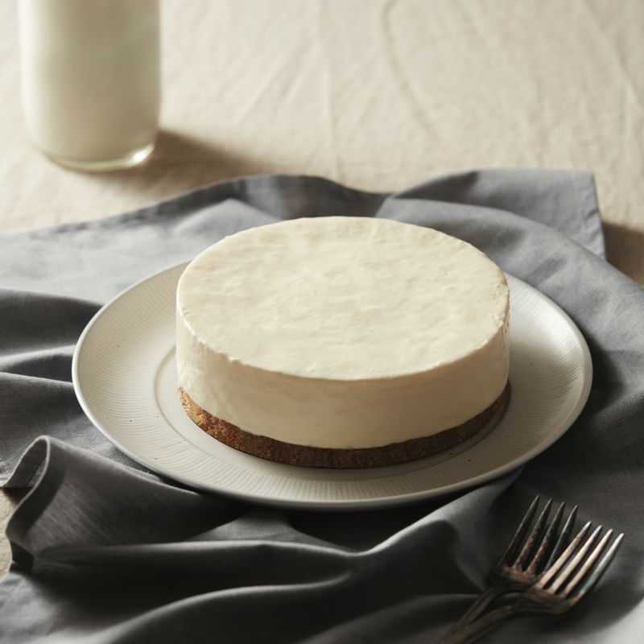

-
통밀쿠키를 비닐 팩에 넣고 밀대로 밀어 최대한 곱게 부숴주세요.
(Tip! 통밀쿠키는 시중에서 판매하는 것을 사용해도 괜찮습니다.)
-
곱게 부서진 통밀쿠키를 볼에 넣고 미리 녹여둔 버터를 부어 잘 섞어주세요.
-
유산지를 깐 팬에 순서2를 붓고 밀대의 동그란 부분을 이용해 평평하게 펴준 뒤 냉장고에 넣어주세요.
-
볼에 크림치즈를 담고 부드럽게 풀어주다가 설탕을 더해 마요네즈 상태가 될 때까지 섞어 주세요.
-
물에 젤라틴을 넣고 충분히 불려주세요.
(Tip! 젤라틴을 처음 불려줄 때 사용할 물은 반드시 차가운 것으로 합니다.)
-
그사이 플레인 요거트를 순서4에 붓고 잘 섞어주세요.
-
순서6에 준비한 생크림의 절반만 넣어 저어주다가 나머지 생크림을 모두 붓고 골고루 믹싱합니다.
(Tip! 거품기를 들어 올렸을 때 끝에 묻은 반죽이 아래로 떨어져 바로 사라지지 않고 몇 초 동안 남아 있으면 완성입니다.)
-

찬물에 불려 놓았던 젤라틴의 물기를 꽉 짜서 작은 그릇에 넣어주세요.
-
커다란 냄비에 뜨거운 물을 붓고 순서8을 올려 중탕으로 젤라틴을 완전히 녹여주세요.
-
순서7에 녹은 젤라틴을 넣고 잘 저어준 다음 레몬즙을 더해 골고루 섞어줍니다.
-
냉장고에 넣어두었던 순서3을 꺼내 통밀쿠키 반죽 위에 순서10을 부어주세요.
-
젓가락으로 표면에 발생한 기포를 없애준 뒤 냉장고에 다시 넣어 3시간 이상 굳힙니다.
-
순서12를 냉장고에서 꺼낸 뒤 뜨거운 행주로 틀을 감싸주세요.
(Tip! 너무 오랫동안 감싸고 있으면 케이크가 다 녹아내릴 수 있으니 주의합니다.)
-
원형 통 위에 순서13을 올려두고 팬을 제거합니다.
-

우유, 커피 등과 함께 맛있게 즐겨주세요!